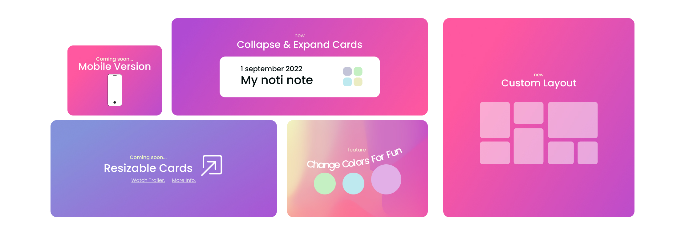

NotiNotes
Notinotes is the simplest free aesthetically pleasant open source notes app. It started as a practice for javascript in the year 2022 but it slowly became a real project because of all the additional functionalities it could have.
Original founder: Mateo Hernandez
Backend Developer: Aura Marcela
The main idea was to create a notes app for fast access and no need for login, and of course, free, all notes are mainly saved in your local storage.
This project does not look for funding but in case you would like to help, we highly appreciate your support!